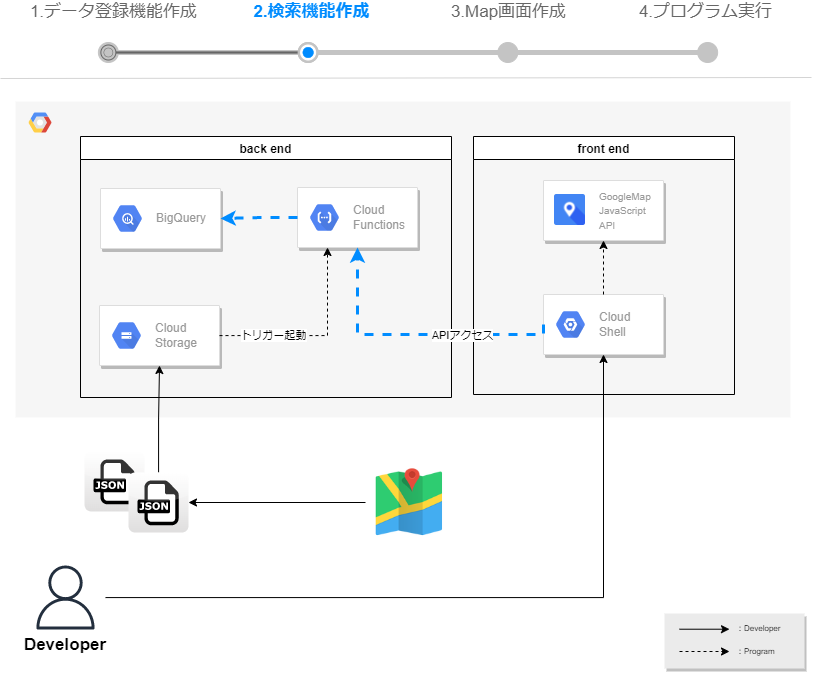
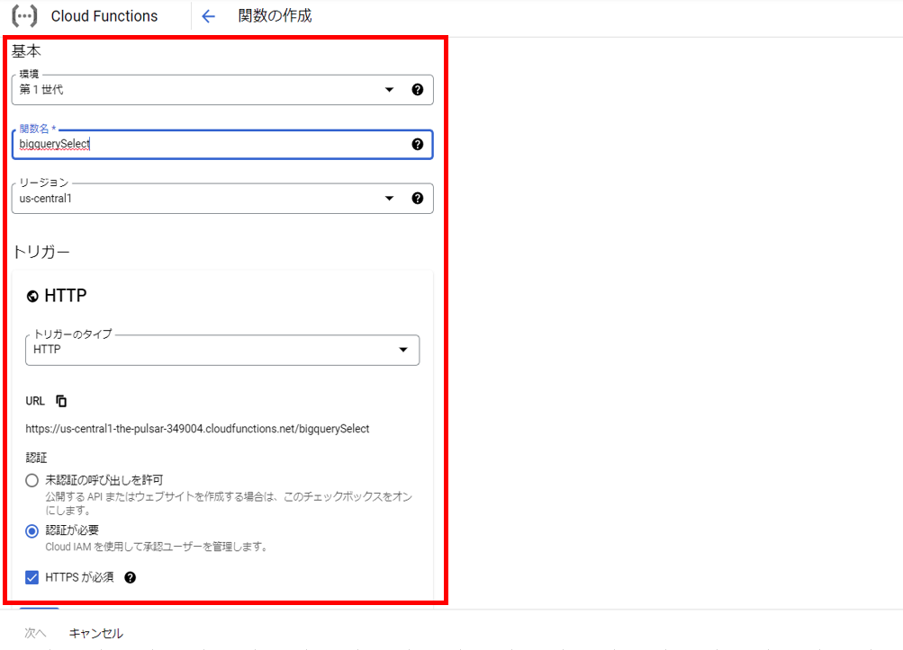
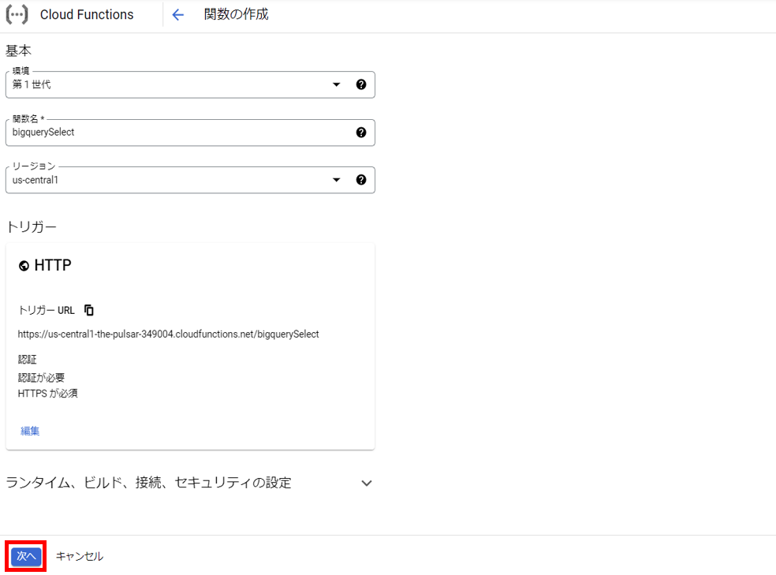
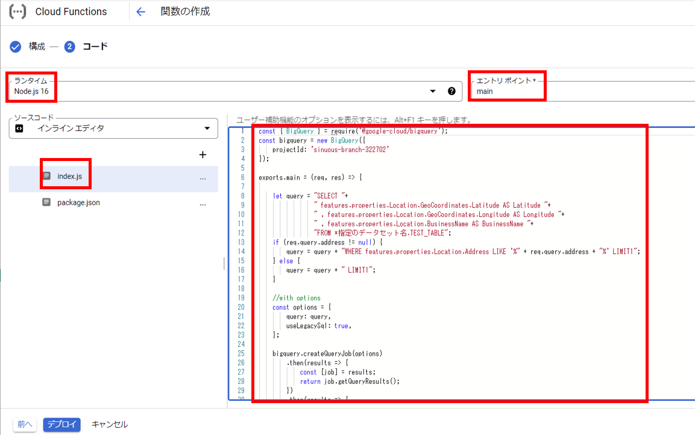
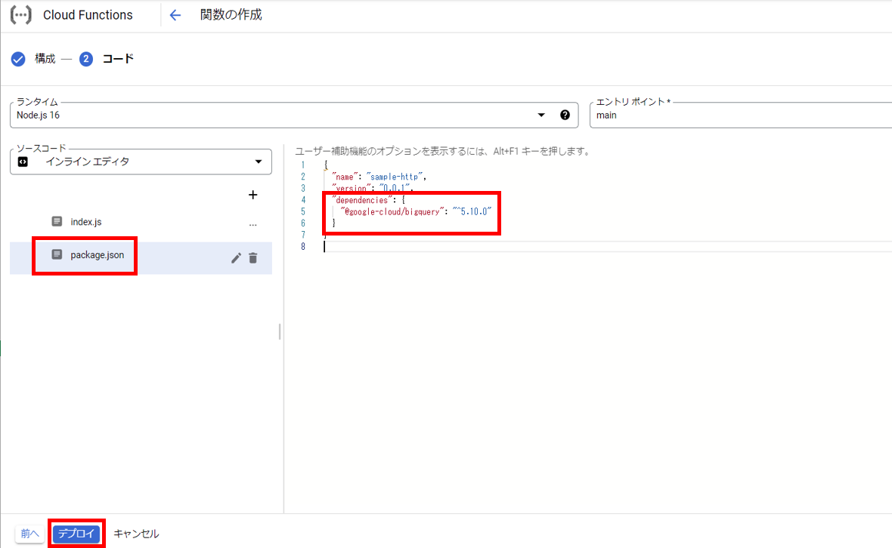
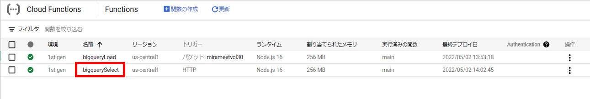
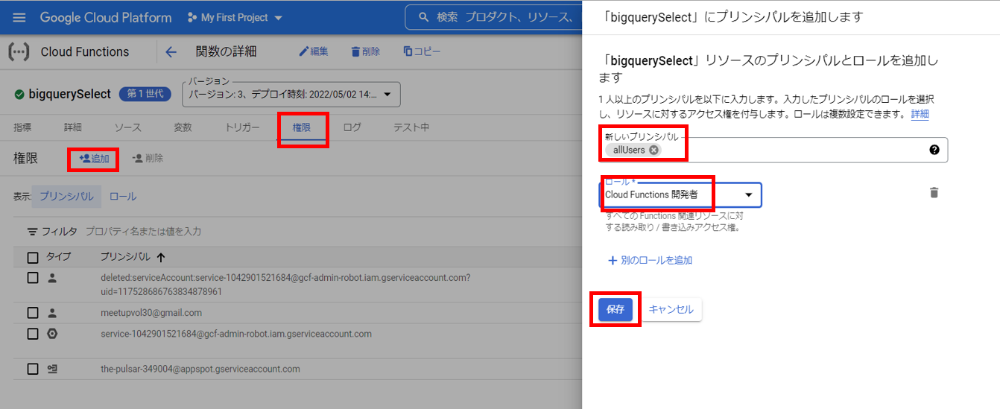
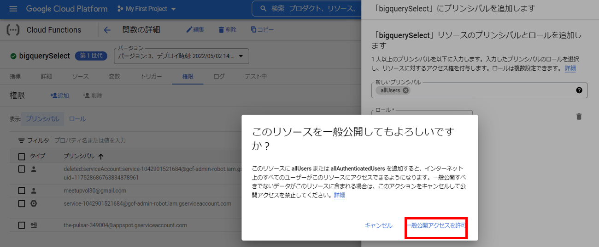
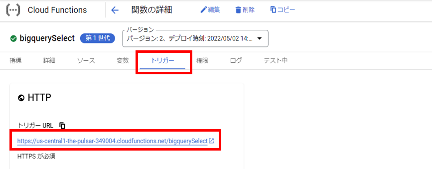
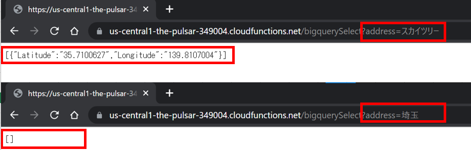

検索機能作成
BigQueryに登録したデータを検索するプログラムを作成します。
このプログラムは、リクエストパラメータで渡された検索条件でSELECT文を作成し、
BigQuery APIを用いてBigQueryのデータを検索します。
検索結果には、緯度・経度情報を取得してレスポンス情報として、返却します。
実行環境はCloud Functionsです。

1. 検索機能を作成する
以下URLまたは、検索バーから「Cloud Functions」と検索し、Cloud Functionsを開きます。
https://console.cloud.google.com/functions/『関数の作成』を選択します。
基本設定とトリガー設定を行い、『保存』を選択します。
『次へ』を選択します。 
ランタイムは"Node.js 16"を選択します。
index.jsを開き、以下コードに書き換えます。
【指定のデータセット名】はご自身のGCP環境に合わせた値に書き換えます。
エントリポイントは、JavaScriptのプログラムに合わせ、"main"に変更します。let queryでSELECT文を作成します。BigQueryに登録したデータはJSON形式のため、
UNNESTを使用して緯度経度情報を取得するSELECT文です。bigquery.createQueryJobでSELECT文をBigQueryに発行します。
レガシーSQLを使用する場合は、useLegacySqlを"true"に設定してください。// import const { BigQuery } = require('@google-cloud/bigquery'); const bigquery = new BigQuery(); exports.main = (req, res) => { // SQL文作成 let query = "SELECT Latitude,Longitude "+ "FROM ( "+ " SELECT GeoCoordinates "+ " FROM ( "+ " SELECT Location "+ " FROM ( "+ " SELECT properties "+ " FROM 【指定のデータセット名】.TEST_TABLE "+ " ,UNNEST(features) "+ " ),UNNEST(properties) "+ " ),UNNEST(Location) "; if (req.query.address != null) { query = query + " WHERE BusinessName LIKE '%" + req.query.address + "%' ),UNNEST(GeoCoordinates) LIMIT 1"; } else { query = query + " ),UNNEST(GeoCoordinates) LIMIT 1"; } // SQLオプション設定 const options = { query: query, useLegacySql: false, }; // SELECT実行 bigquery.createQueryJob(options) .then(results => { const [job] = results; return job.getQueryResults(); }) .then(results => { const [rows] = results; res.header('Access-Control-Allow-Origin', "*"); res.header('Access-Control-Allow-Headers', "Origin, X-Requested-With, Content-Type, Accept"); res.status(200).send(rows); }) .catch(error => { console.log(error); }); }
package.jsonを開き、dependenciesにgoogle-cloud/bigQueryを追記します。
{ "name": "sample-http", "version": "0.0.1", "dependencies": { "@google-cloud/bigquery": "^5.10.0" } }
『デプロイ』を選択し、デプロイされるのを待ちます。
約１分ほどでデプロイが完了します。作成したCloud Functions を選択します。 
画面からのアクセスを許可します。
『権限』タブから『追加』を選択し、alluserで"Cloud Functions開発者"の権限を付け、
『保存』を選択します。
"リソースの一般公開"の確認が求められるので、『一般アクセスを許可』を選択します。


2. 動作確認
『トリガー』タブから、『トリガーURL』を選択して動作確認をします。
テストデータはスカイツリーと、東京タワーの二つが登録されているので、
リクエストパラメータに"?address=スカイツリー"のように検索値を渡すことで、
BigQueryの検索結果が変わることが確認できます。
また、テストデータの存在しない条件の場合は、NULLが返却されていることがわかります。
